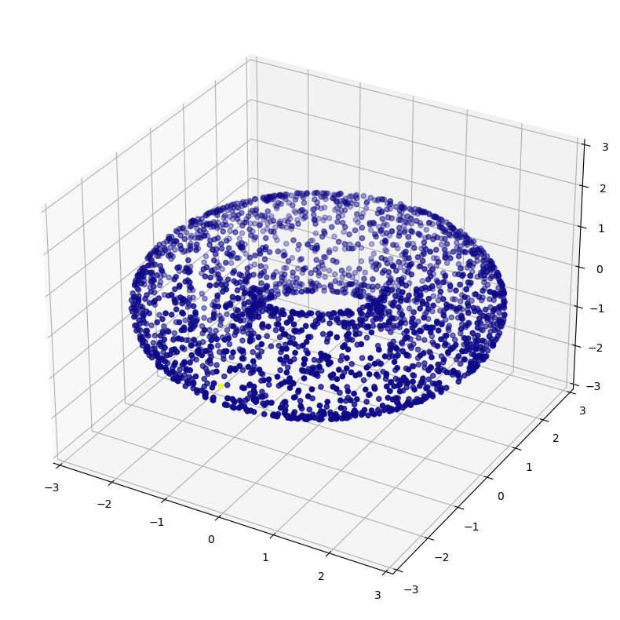
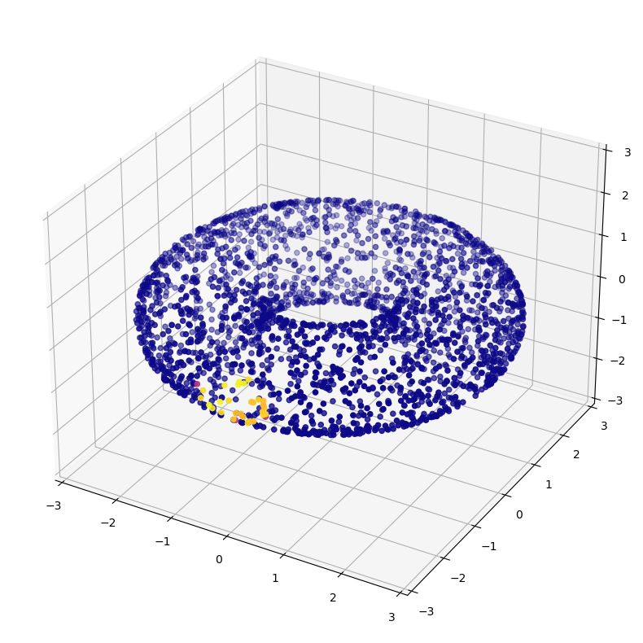

from diffusion_curvature.utils import random_jnparray
from diffusion_curvature.distances import pairwise_euclideanGraph Creation Utils
get_umap_graph
get_umap_graph (X, knn=5, **kwargs)
| Type | Default | Details | |
|---|---|---|---|
| X | |||
| knn | int | 5 | knn default to 15 in UMAP |
| kwargs |
get_scanpy_graph
get_scanpy_graph (X, knn=5, **kwargs)
get_alpha_decay_graph
get_alpha_decay_graph (X, knn:int=5, decay:float=40.0, anisotropy:float=0, n_pca:int=None, **kwargs)
get_knn_graph
get_knn_graph (X, knn=5, **kwargs)
diff_aff
diff_aff (graph)
Compute the diffusion affinity for a pygsp graph.
kernel_degree
kernel_degree (graph)
Compute the kernel degree for a pygsp graph.
diff_op
diff_op (graph)
Compute the diffusion operator for a pygsp graph.
The Differentiable Kernel
generic_kernel
generic_kernel (D, sigma, anisotropic_density_normalization)
| Details | |
|---|---|
| D | distance matrix |
| sigma | kernel bandwidth |
| anisotropic_density_normalization |
diffusion_matrix_from_affinities
diffusion_matrix_from_affinities (W)
X = random_jnparray(100,9)
D = pairwise_euclidean(X,X)
W = generic_kernel(D,0.7,0.5)
P = diffusion_matrix_from_affinities(W)import jax.numpy as jnpjnp.max(jnp.array([1, 0.4, 1, 3])/jnp.array([1e-8,1,1,1]))Array(1.e+08, dtype=float32)jnp.array([1, 0.4, 1, 3])/jnp.array([0,1,1,1])Array([inf, 0.4, 1. , 3. ], dtype=float32)Graph Testing
from diffusion_curvature.datasets import *
from diffusion_curvature.utils import *
from diffusion_curvature.heat_diffusion import *X_torus,ks = torus(5000,use_guide_points=True)G_torus = get_alpha_decay_graph(X_torus, decay=None, knn=30, anisotropy=1, )
P = diff_op(G_torus).todense() # is sparse, by default
P = jnp.array(P)
Pt = jax_power_matrix(P,30)
plot_3d(X_torus, P[0])
plot_3d(X_torus, G_torus.P[0].toarray())
np.allclose(diff_op(G_torus).toarray(), G_torus.P.toarray())FalseA = G_torus.K.toarray()
P_homemade = diffusion_matrix_from_affinities(A)np.allclose(P_homemade, G_torus.P.toarray(), atol=1e-4)TrueP_homemadeArray([[0.0334698 , 0. , 0. , ..., 0. , 0. ,
0. ],
[0. , 0.03510092, 0. , ..., 0. , 0. ,
0. ],
[0. , 0. , 0.03167431, ..., 0. , 0. ,
0. ],
...,
[0. , 0. , 0. , ..., 0.03027344, 0. ,
0. ],
[0. , 0. , 0. , ..., 0. , 0.03521152,
0. ],
[0. , 0. , 0. , ..., 0. , 0. ,
0.03522947]], dtype=float32)G_torus.P.toarray()array([[0.03346897, 0. , 0. , ..., 0. , 0. ,
0. ],
[0. , 0.03508904, 0. , ..., 0. , 0. ,
0. ],
[0. , 0. , 0.03166429, ..., 0. , 0. ,
0. ],
...,
[0. , 0. , 0. , ..., 0.03027342, 0. ,
0. ],
[0. , 0. , 0. , ..., 0. , 0.03520697,
0. ],
[0. , 0. , 0. , ..., 0. , 0. ,
0.03523469]])PArray([[0.96891046, 0. , 0. , ..., 0. , 0. ,
0. ],
[0. , 0.9683374 , 0. , ..., 0. , 0. ,
0. ],
[0. , 0. , 0.9701013 , ..., 0. , 0. ,
0. ],
...,
[0. , 0. , 0. , ..., 0.9696673 , 0. ,
0. ],
[0. , 0. , 0. , ..., 0. , 0.9694721 ,
0. ],
[0. , 0. , 0. , ..., 0. , 0. ,
0.96949625]], dtype=float32)G_torus.K.toarray()array([[0.00111111, 0. , 0. , ..., 0. , 0. ,
0. ],
[0. , 0.00118906, 0. , ..., 0. , 0. ,
0. ],
[0. , 0. , 0.00100781, ..., 0. , 0. ,
0. ],
...,
[0. , 0. , 0. , ..., 0.00097656, 0. ,
0. ],
[0. , 0. , 0. , ..., 0. , 0.0011491 ,
0. ],
[0. , 0. , 0. , ..., 0. , 0. ,
0.0011491 ]])!nbdev_export/usr/bin/bash: line 1: nbdev_export: command not found